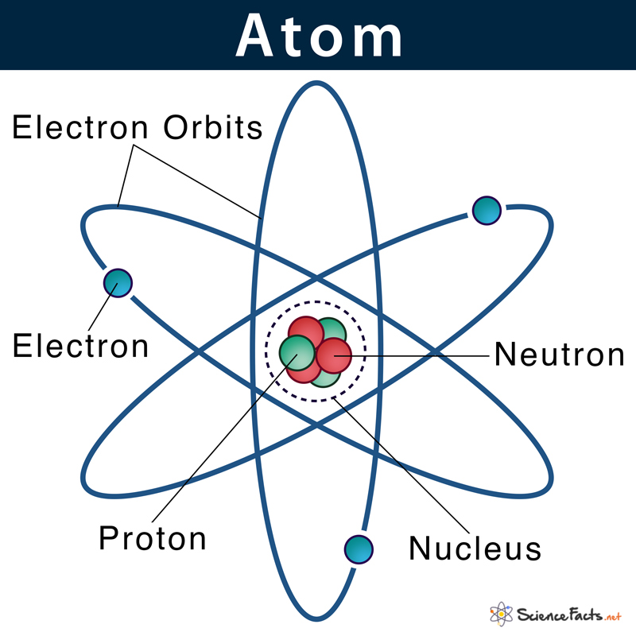

Images

Chemistry is the branch of science that explores the composition, structure, properties, and changes of matter. It forms the foundation for understanding the world around us, from the air we breathe to the food we consume.
At the heart of chemistry lies the atom, the smallest unit of an element that retains its properties. Each atom consists of a nucleus, composed of protons and neutrons, orbited by electrons. The unique arrangement of these subatomic particles gives rise to the vast diversity of elements.
Understanding how atoms bond together is fundamental in chemistry. Covalent bonds involve the sharing of electrons, while ionic bonds result from the transfer of electrons between atoms. These interactions give rise to molecules and compounds.
Dmitri Mendeleev's ingenious creation, the periodic table, arranges elements based on their atomic number and chemical properties. It serves as a roadmap for understanding the characteristics and behaviors of elements.
Chemical reactions involve the transformation of substances into new ones. Equations depict the precise stoichiometry of reactants and products. Key concepts like catalysts, equilibrium, and reaction kinetics are crucial in this realm.
Organic chemistry studies the structure, properties, and reactions of carbon-containing compounds. It underpins the understanding of life itself, as all living organisms are composed primarily of organic molecules.
Inorganic chemistry explores compounds that don't contain carbon-hydrogen (C-H) bonds. This branch encompasses everything from minerals to metals and their chemical properties.
Physical chemistry bridges the gap between physics and chemistry, focusing on the physical and chemical properties of matter. Topics include thermodynamics, quantum mechanics, and spectroscopy.
Analytical chemistry involves the identification and quantification of substances. Techniques such as chromatography and spectroscopy play a pivotal role in this field.
Biochemistry delves into the chemical processes within living organisms. It uncovers the molecular mechanisms behind life's vital functions, from metabolism to genetics.
Environmental chemistry addresses the impact of human activities on the environment. It plays a critical role in mitigating pollution and preserving natural ecosystems.
Medicinal chemistry focuses on the design and synthesis of drugs, striving to improve healthcare by developing more effective and safer medications.
Materials science applies chemical principles to create new materials with enhanced properties, leading to innovations in electronics, aerospace, and more.
Food chemistry explores the composition, preservation, and quality of food products, ensuring the safety and taste of the food we consume.
Chemistry is not just a science; it's a lens through which we view the intricacies of our world. From the tiniest atoms to the grandest chemical reactions, chemistry enriches our understanding of the universe. We hope this webpage serves as a valuable resource to satiate your curiosity and inspire your journey into the realms of chemistry.